I'm Sankara Gomathi, a UI/UX designer from Tirunelveli, India. I research, wireframe and prototype in Figma, with a focus on accessibility and simple flows.
I'm a UI/UX designer with hands-on experience in user research, wireframing, high-fidelity prototyping, and responsive web and mobile design. I work in Figma and enjoy building design systems and clear developer handoff.
I'm also comfortable with HTML, CSS and JavaScript, which helps me design interfaces that are realistic to build.
A mobile app that helps patients reach a doctor virtually, including late at night when a hospital visit is hard. Seven steps, from the first problem to the final handoff.
RoleUI/UX Designer
PlatformsiOS & Android
ToolsFigma
StandardWCAG Level AA
TypeSelf-initiated project
Duration3 weeks
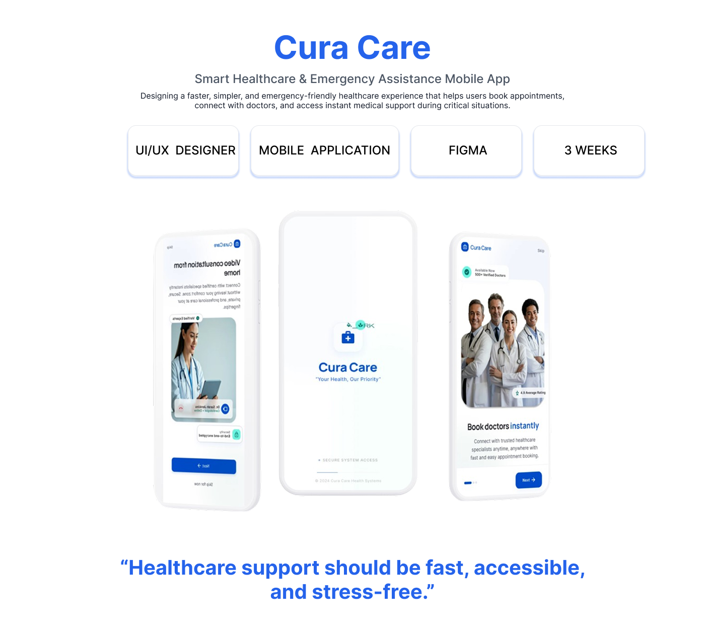
15+High-fidelity screens
50+Reusable components
20+Interactive screens
AAWCAG Level accessibility
2Platforms: iOS & Android
The problem
Patients cannot always reach a hospital quickly, especially for urgent night-time concerns.
My approach
Desk research from published sources and existing telehealth apps, then a mobile design for virtual consultations.
The result
15+ high-fidelity screens, 50+ reusable components, and WCAG Level AA accessibility, designed as a self-initiated project.
Step 01 · Problem
What was the issue?
This started as my own project, from a problem I believed exists. Not everyone can get to a hospital when they need help. A fever at midnight, a worry about a child, or a patient who cannot travel all lead to the same question: who can I speak to right now? Cura Care is a mobile app that lets patients reach a doctor virtually, so an urgent concern does not have to wait until the clinic opens.
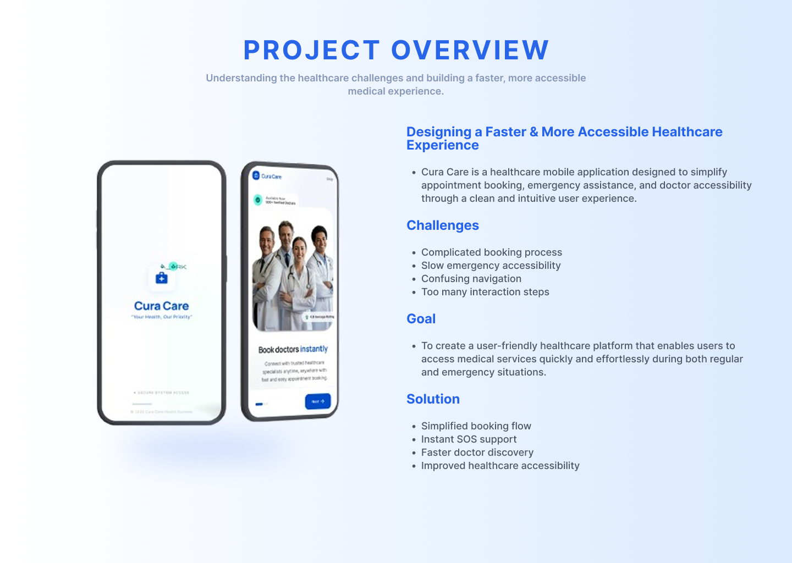
Step 02 · Research
What did you learn?
I collected published sources on urgent-care access, and reviewed existing telehealth apps to see how they handle finding a doctor and starting a consultation. Since this is my own project, I gathered these sources myself. They are a starting point, and the design still needs to be checked with real users.
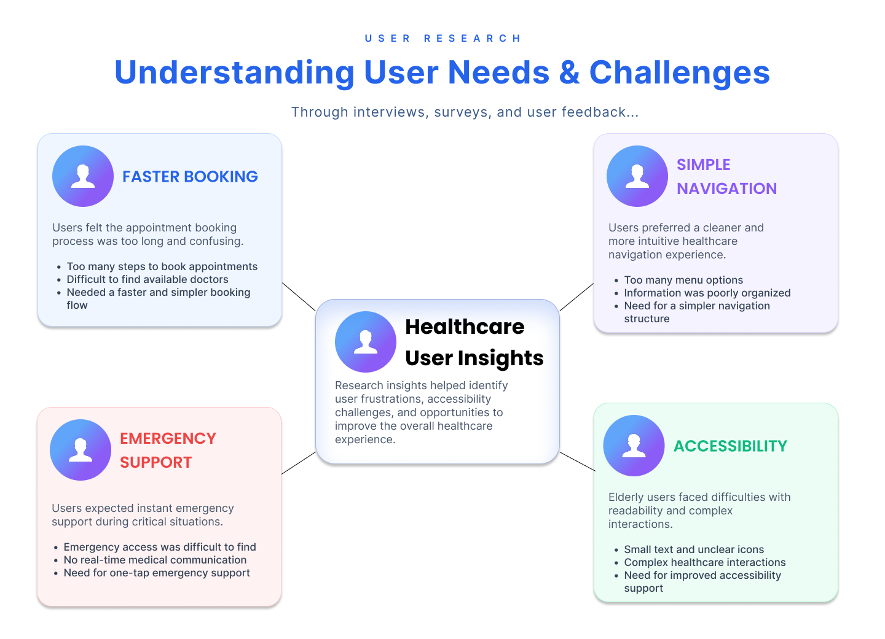
Step 03 · Define
Who are the users?
I wrote personas for two groups: patients who need quick access to a doctor, and providers who manage those consultations. They are based on the research sources and my own assumptions, which I have marked as things to validate. I also mapped 5+ critical workflows, from asking for help to following up afterwards.
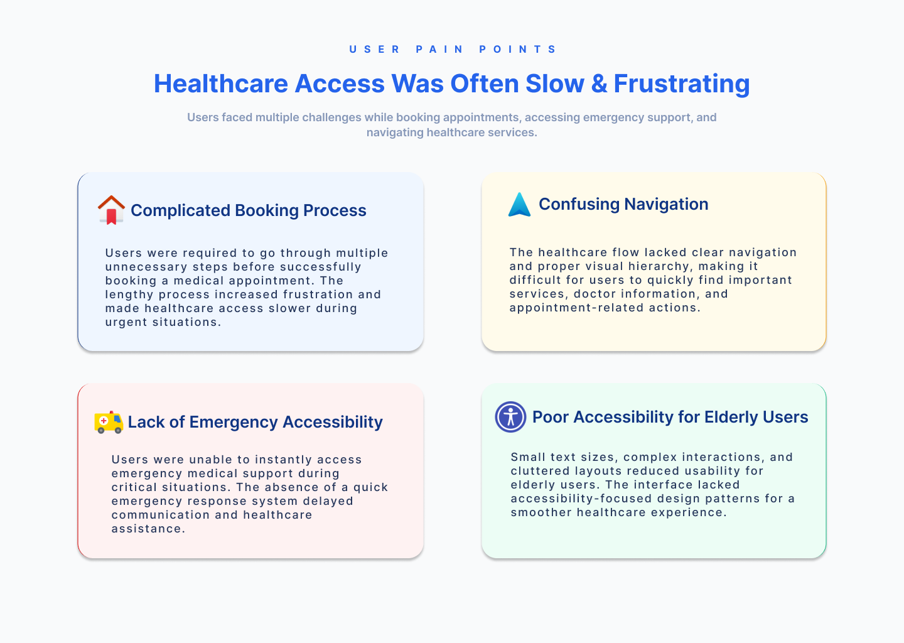
Step 04 · Wireframe
How did you plan the screens?
Before any colour or detail, I wireframed the core journey: opening the app, finding the right care, and starting a virtual consultation. Getting this structure right first kept the path short for someone who is worried and needs help quickly.
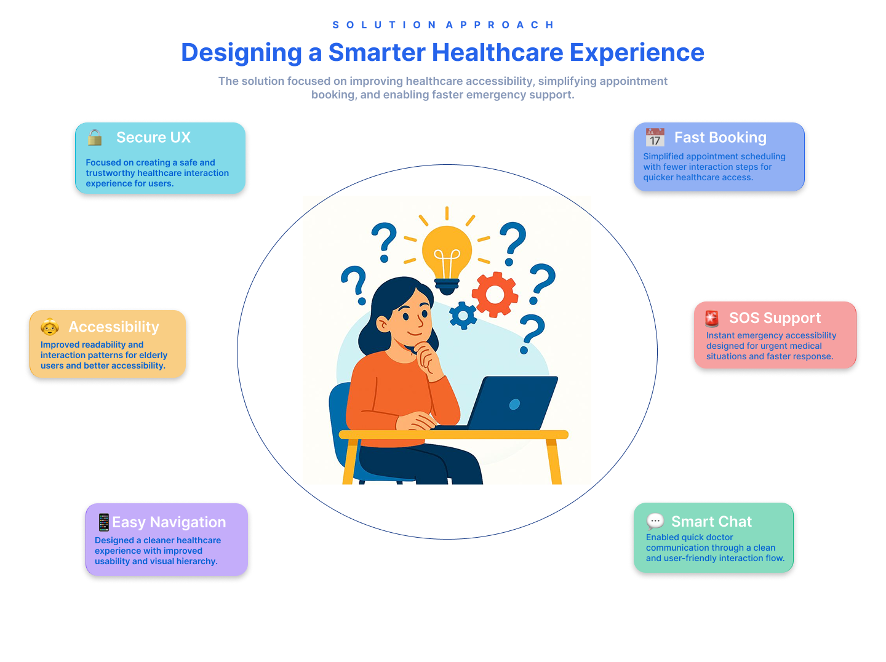
Step 05 · UI Design
How did you design them?
I designed 15+ high-fidelity screens for iOS and Android, built to WCAG Level AA, so the app works for people with different needs, including someone who is unwell and using a small screen. A library of 50+ reusable components kept 20+ interactive screens consistent, and micro-interactions made key actions clear.
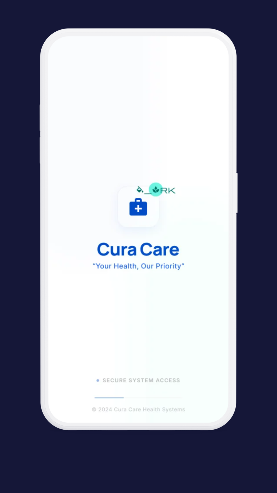
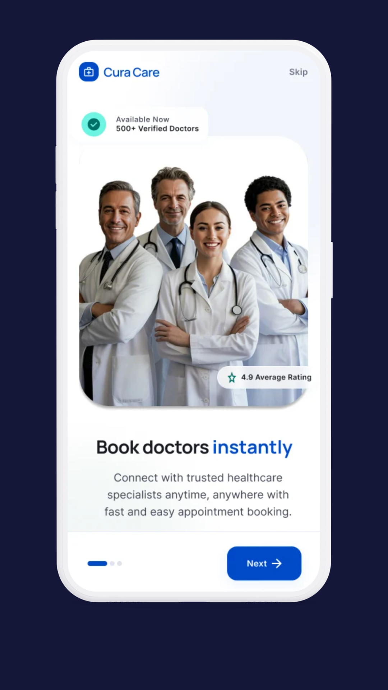
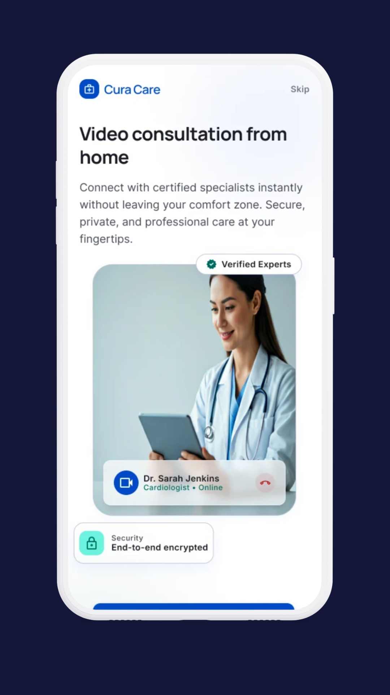
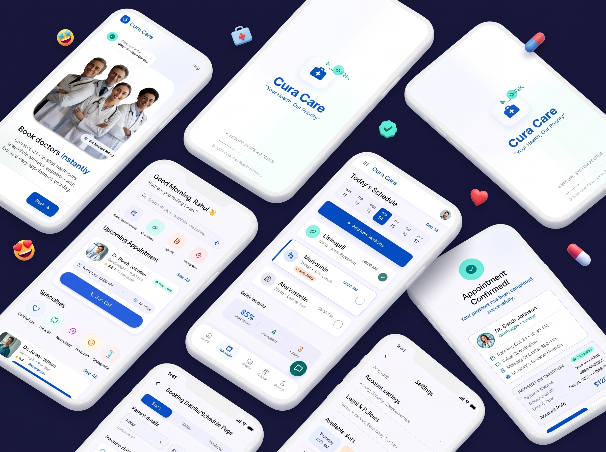
Step 06 · Testing
How did you improve the design?
I reviewed the flows myself against WCAG guidelines and tightened the steps where the path felt long. Testing with real patients and providers is the next step, and I would expect the design to change after that.
Step 07 · Final outcome
What did you deliver?
There was no client for this project. It is my own project, and I completed it end to end myself: high-fidelity screens for iOS and Android, a component library, interaction specifications and design documentation.
Design for worry, not just tasks
A person with a fever at midnight needs calm, clear steps more than extra features.
Accessibility from day one
Designing to WCAG Level AA early was far easier than fixing it at the end.
Keep the core path short
When someone is unwell and in a hurry, the main action should always be close at hand.
Case study 02 · Travel & tourism
Traveler Planning
A travel planning website that helps people turn a trip idea into a personalised plan, from exploring destinations to sending an enquiry. Seven steps, from Figma to a live site.
Planning a trip means comparing many sites, and the next step is often unclear.
My approach
Wireframes and user flows first, then responsive Figma mockups built into a live site.
The result
20+ responsive mockups, 6+ iteration cycles, and a live site with a trip-type enquiry form.
Step 01 · Problem
What was the issue?
Planning a holiday usually means comparing destinations, budgets and dates across many different sites. Travellers often do not know where to start, and the process can feel overwhelming. Traveler Planning was designed as one place to explore destinations, shape a trip and send an enquiry, instead of piecing it together across several platforms.
Step 02 · Research
What did you learn?
I reviewed existing travel and tourism platforms to see how they organise destinations, trip planning and booking. A common pattern was that information was spread across many pages, which made the next step hard to see. These findings come from reviewing those platforms, so they still need to be checked with real travellers.
Step 03 · Define
Who are the users?
The site speaks to different kinds of travellers, so I grouped them by trip type: family, honeymoon, solo, group, school and office. Each needs something different from a plan, such as safety for solo travellers or group logistics for school trips. I then mapped the core user flows around destination exploration, trip planning, itinerary management and booking.
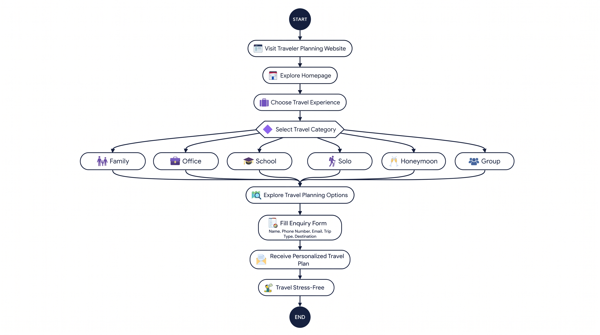
Step 04 · Wireframe
How did you plan the screens?
I wireframed the main flows before any visual design: destination exploration, trip planning, itinerary management and the booking and enquiry interface. Settling the structure first kept the navigation simple, with five clear sections (Destinations, Services, Offer, Testimonials and FAQ) and one obvious action, Plan My Trip.
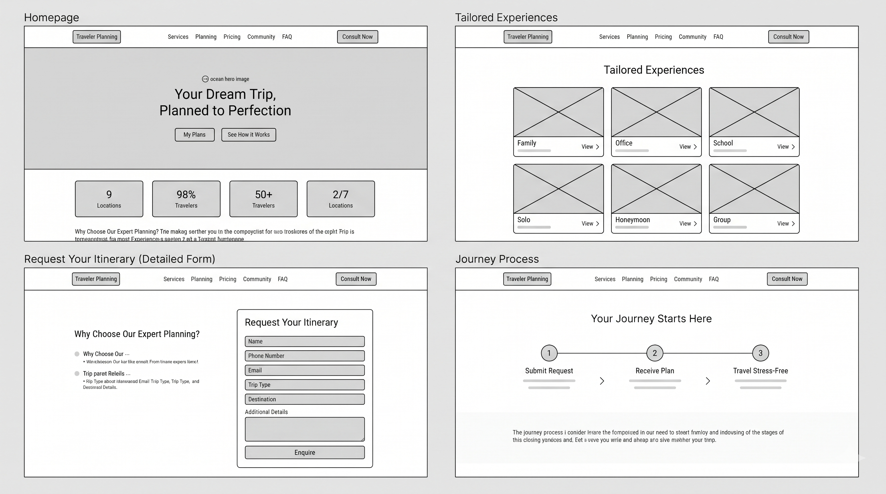
Step 05 · UI Design
How did you design them?
I created 20+ responsive mockups in Figma for desktop, tablet and mobile. The visual hierarchy puts destinations and the enquiry action first. The design was then built in HTML and CSS, with Flexbox and Grid so the layouts adapt cleanly across screen sizes.
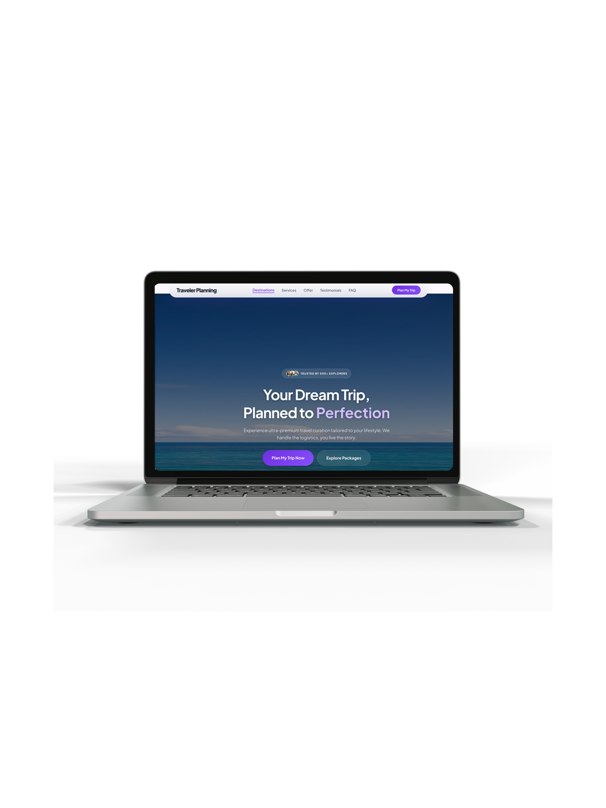
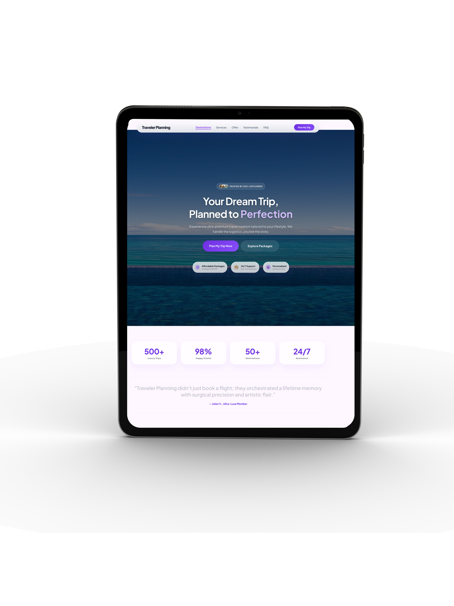
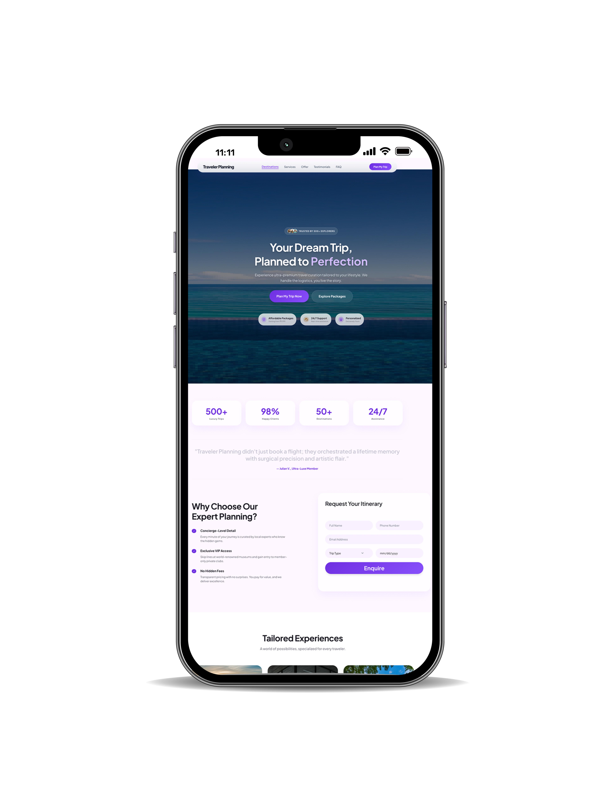
Step 06 · Testing
How did you improve the design?
Over 6+ iteration cycles I refined the design using feedback and user insights. Each round asked the same questions: can someone find a destination, understand the next step, and send an enquiry without confusion? These changes improved visual hierarchy and content discoverability, and simplified the navigation to reduce cognitive load.
Step 07 · Final outcome
What did you deliver?
A responsive travel planning website: Figma designs for desktop, tablet and mobile, and a live version built with HTML and CSS, deployed through GitHub and Vercel. The site includes destination sections, a trip-type enquiry form, an FAQ and contact options.
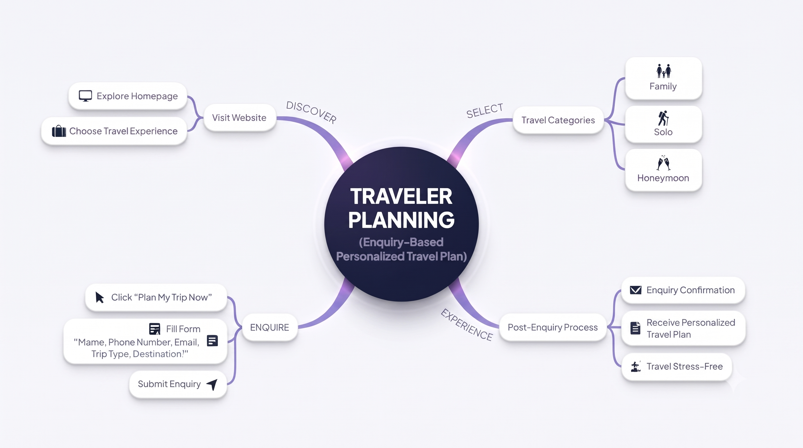
Start with the trip type
Grouping travellers by what they need made every later decision clearer.
Keep the next step obvious
One clear action, Plan My Trip, matters more than extra options.
Build responsively from the start
Flexbox and Grid let one layout adapt across desktop, tablet and mobile.
Case study 03 · Hotel website
Aurolle Hotel Website
A hotel website project that is currently in progress. This page will be filled in step by step as the work moves forward.
StatusIn progress
RoleTo be added
ToolsTo be added
Step 01 · Problem
What was the issue?
Add the problem the hotel website needed to solve.
Step 02 · Research
What did you learn?
Add what you learned from users, the client or competitor hotel sites.
Step 03 · Define
Who are the users?
Add the users, personas and key workflows.
Step 04 · Wireframe
How did you plan the screens?
Add how the pages and navigation were planned.
Step 05 · UI Design
How did you design them?
Add the final screens, design system and key decisions.
Step 06 · Testing
How did you improve the design?
Add testing results and what changed. Leave empty if testing is not done yet.
Step 07 · Final outcome
What did you deliver?
Add what has been delivered so far. Update this as the project moves forward.
Design process
How I work.
01
Discover
Research and interviews
02
Define
Personas and journeys
03
Ideate
Flows and concepts
04
Wireframe
Low-fidelity structure
05
Design
High-fidelity UI
06
Prototype
Interactive flows
07
Test
Usability validation
Currently applying this process to the Aurolle Hotel Website, which is in progress.
Experience & education
Where I've worked and studied.
September 2026 – Present
UI/UX Design Intern
Team Green Step Private Limited, Tirunelveli. Designed an end-to-end Ride With US cab booking website in Figma: research, user flows, final UI, responsive screens, design system and an interactive prototype.
Projects
Cura Care & Traveler Planning
See the case studies above.
2023 – 2026
BSc Information Technology
Sri Ram Nallamani Yadava College, Tenkasi (Manonmaniam Sundaranar University)
2022 – 2023
Higher Secondary, Mathematics & Computer Science
St. Joseph's Girls Higher Secondary School, Tirunelveli (State Board)
 Aurolle Hotel
Aurolle Hotel